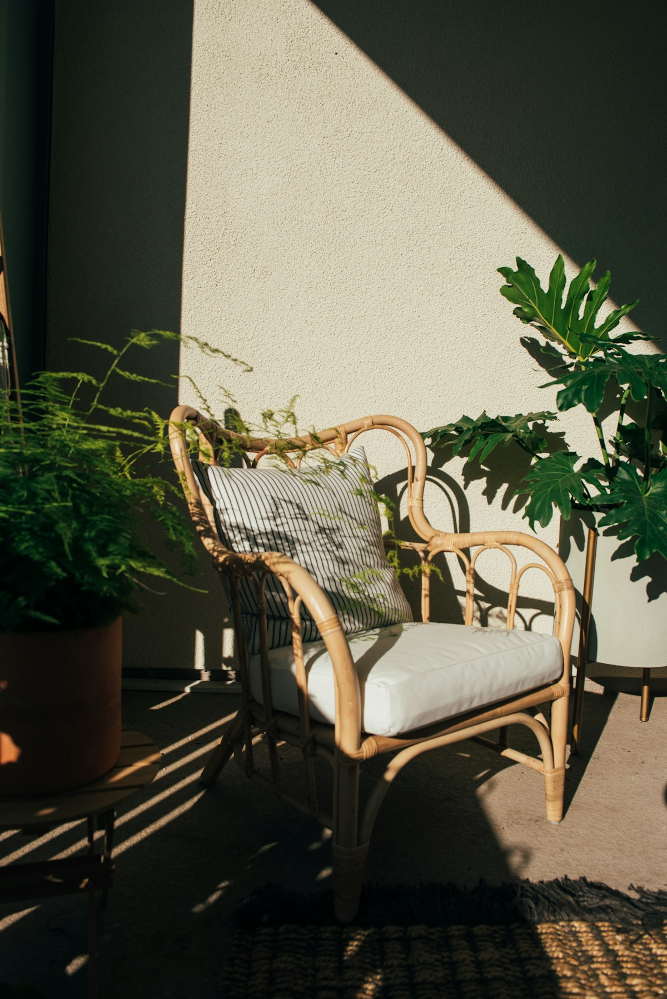
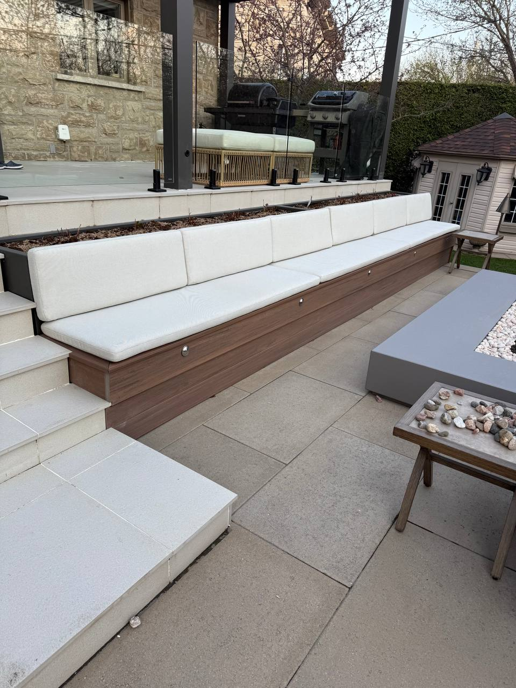

Outdoor Cushion Reupholstering in Montreal
Custom outdoor cushions and replacement covers in performance fabrics engineered for Montreal's climate — UV-resistant, moisture-resistant, and built to last.
Performance fabrics for Montreal's outdoor season
Montreal summers are short — your outdoor space should look its best for every minute of them. Whether you have a terrace sofa that's lost its shape, a set of patio chairs with faded cushions, or a custom bench that needs new covers, Atlas Upholstering crafts outdoor cushions that are as functional as they are beautiful.
We work exclusively with outdoor-rated performance fabrics: solution-dyed acrylics and coated polyesters that are colourfast under intense UV, quick-drying after rain, and resistant to mold and mildew — the conditions that destroy ordinary upholstery in a single season. Every cushion is built to your exact dimensions, whether you're replacing a single piece or outfitting an entire terrace.


Not all outdoor fabric is created equal
Standard patio cushion fabric fades within a season under Montreal's summer sun. The performance fabrics we use are solution-dyed — meaning the colour goes all the way through the fibre, not just on the surface — which makes them dramatically more resistant to UV degradation.
The same fabrics are tested for mold and mildew resistance, which matters enormously in Montreal's humid July and August. They dry quickly after rain, resist salt air for waterfront properties, and are easy to clean with soap and water. You won't find these materials at a fabric retailer — they're contract-grade textiles sourced from suppliers who specialize in outdoor performance.
Built for Montreal's outdoor season
Performance Fabrics
Every fabric we use for outdoor applications is UV-resistant, moisture-wicking, and mold-resistant — engineered specifically for outdoor exposure, not just marketed as outdoor-suitable. Colourfastness tested to 2,000+ hours of UV exposure.
Custom Fit
We build every cushion to your exact dimensions — length, width, depth, and shape. Whether your furniture has standard dimensions or a completely custom profile, we cut and sew to fit. No approximations, no ill-fitting covers.
Winter-Ready Advice
We advise every outdoor cushion client on proper storage for Montreal winters. Even performance-grade outdoor fabrics benefit from indoor storage from November to April. We can also build cushions with storage bags included — so there's no excuse not to bring them in.
Your outdoor cushions in 3 steps
1. Measure & Assess
Bring your existing cushions in or send us dimensions. We assess whether covers alone need replacing or if the foam should be rebuilt. For completely custom pieces, we take measurements of your furniture frame to ensure a precise fit.
2. Performance Fabric Selection
Choose from our range of outdoor-rated fabrics. We'll show you swatches and discuss UV ratings, moisture performance, texture, and colour. We'll help you balance aesthetics with the durability your outdoor environment demands.
3. Precision Manufacturing
Your cushions are cut and sewn in our Montreal workshop to the exact specifications. Seams are reinforced, zippers are heavy-duty outdoor grade, and the foam is properly wrapped for shape retention. Turnaround is typically 1–2 weeks.
Outdoor Cushion FAQ
-
Outdoor fabrics are specifically engineered to withstand UV exposure, moisture, humidity, and mold — conditions that would quickly degrade standard indoor textiles. High-performance outdoor fabrics such as solution-dyed acrylics and coated polyesters are colourfast, quick-drying, and resistant to mildew, making them the right choice for any exterior application.
-
Most high-performance outdoor fabrics we use are highly water-resistant and quick-drying rather than fully waterproof. For applications requiring full waterproofing — such as boat cushions or permanently uncovered seating — we can specify coated marine-grade fabrics. We'll recommend the right level of protection for your specific situation.
-
Quality outdoor cushions made with solution-dyed acrylic or performance polyester fabrics typically last 5–10 years with proper care. The key factors are UV exposure, whether they're stored during Montreal winters, and your cleaning routine. We'll advise you on care practices to maximize the lifespan of your investment.
-
Yes — even with performance fabric, we strongly recommend storing outdoor cushions indoors during Montreal's winter months. Extended exposure to freeze-thaw cycles, snow, and ice stresses seams and foam over time. Bringing cushions inside from November to April will significantly extend their lifespan and keep them looking their best season after season.